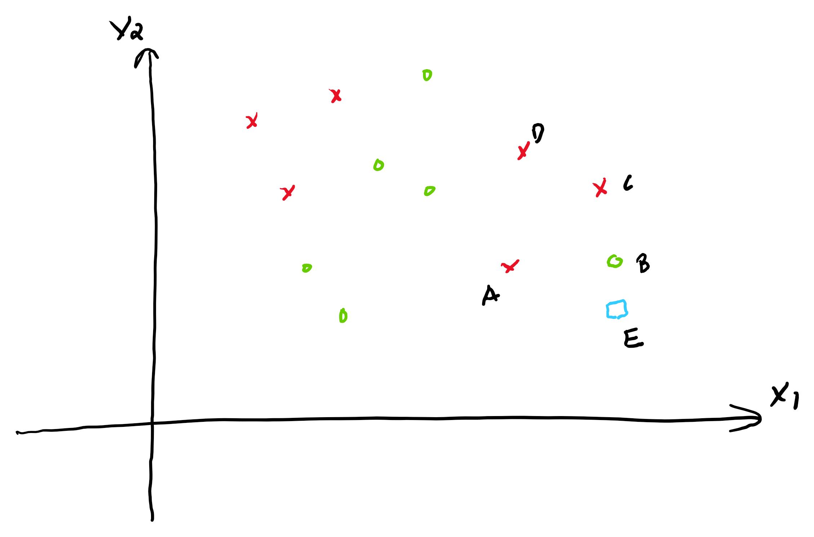

AYU - Individual Week 7
Instruction: Following the sample problems and solution below to do this assignment.
Problem 1.
Given the data.
| Age | Sex | Survived | |
|---|---|---|---|
| A | 27 | M | 0 |
| B | 30 | F | 1 |
| C | 80 | F | 1 |
| D | 50 | M | 0 |
| E | 60 | F | 0 |
| F | 70 | F | 1 |
Let G be a female of 55 years old. Use 1NN to predict whether G is survived (
Survived =1) or not (Survived = 0). Does the prediction change if used 3NN?Given the following data, use 1NN and 3NN to predict the salary for G (a female of 55 years old).
| Age | Sex | Salary (k) | |
|---|---|---|---|
| A | 27 | M | 80 |
| B | 30 | F | 70 |
| C | 80 | F | 90 |
| D | 50 | M | 60 |
| E | 60 | F | 10 |
| F | 70 | F | 100 |
Problem 2.
Given the data. Consider \(x\) as 1 and \(o\) as 0.

With EB = 1.4, EA = 3, EC = 3, ED = 4,
Use the uniform weights to calculate the predicted probability and the prediction of 3NN for E.
Use the distance weights to calculate the predicted probability and the prediction of 3NN for E.
Use the distance weights to calculate the predicted probability and the prediction of 4NN for E.
Problem 3 - KNN for Recommendation System (Optional)
This problem is optional. Complete this problem correctly will give you 50% point extra credits for this AYU.
We can use KNN to build a recommendation system to recommend items to users. For more about using KNN for Recommendation System, please click to the below link.
Given the utility matrix
| Item 1 | Item 2 | Item 3 | Item 4 | Item 5 | |
|---|---|---|---|---|---|
| Alice | 5 | 3 | 3 | 4 | |
| User 1 | 3 | 1 | 2 | 3 | 3 |
| User 2 | 2 | 3 | 4 | 3 | 5 |
| User 3 | 3 | 3 | 1 | 4 | 4 |
| User 4 | 1 | 5 | 5 | 4 | 2 |
Should we recommend Item 5 to Alice? Calculate her estimated rating on Item 5 to answer the question. Recommend the item if Alice’s rating is 4 or above.
Use user-based KNN, with \(k=2\) and Manhantan distance.
Use item-based KNN, with \(k=3\) and cosine similarity.